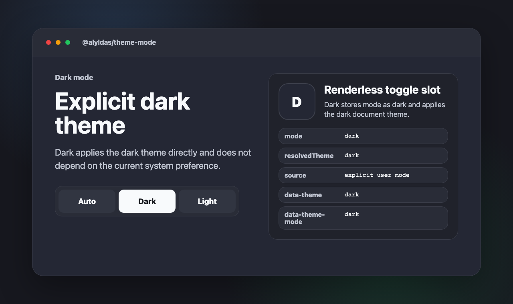
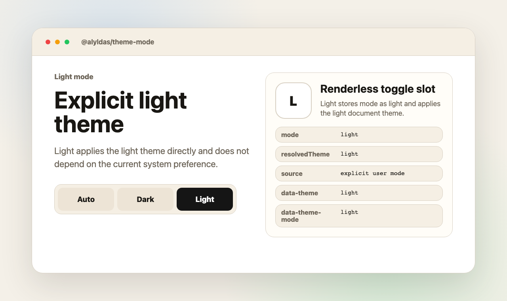

@alyldas/theme-mode/nuxt
Nuxt module
Register the module and configure storage, attributes, CSS variable prefix, fallback theme, or custom cycle.
Nuxt-first color mode
A small controller for auto, dark, and light mode with Nuxt anti-flash setup, a renderless Vue toggle, and framework-neutral helpers.
Theme Mode keeps the selected mode and the concrete resolved theme separate, so auto mode remains transparent across SSR and hydration.
The module injects an early head script and hydrates the client controller with the same normalized options.
The slot exposes mode, resolvedTheme, nextMode, label, and actions while your app owns markup and accessibility.
Use framework-neutral parsing, persistence, cycle, and DOM application helpers in tests or custom adapters.
Configure the scope registry, install the package, then import the entry point that matches your app layer.
@alyldas:registry=https://npm.pkg.github.com
npm install @alyldas/theme-mode@1.0.1
import '@alyldas/theme-mode/style.css'@alyldas/theme-mode/nuxt
Register the module and configure storage, attributes, CSS variable prefix, fallback theme, or custom cycle.
@alyldas/theme-mode/vue
Use the shared document controller or create isolated controllers for tests and embedded widgets.
@alyldas/theme-mode/core
Normalize options, resolve preferred theme, persist mode, and apply document attributes.
The Nuxt module writes `data-theme`, `data-theme-mode`, `color-scheme`, and icon display CSS variables before the Vue app takes over.
export default defineNuxtConfig({
modules: ['@alyldas/theme-mode/nuxt'],
themeMode: {
defaultMode: 'auto',
fallbackTheme: 'dark',
storageKey: 'theme-mode',
},
})The README screenshots are generated from the same static demo page linked here.

